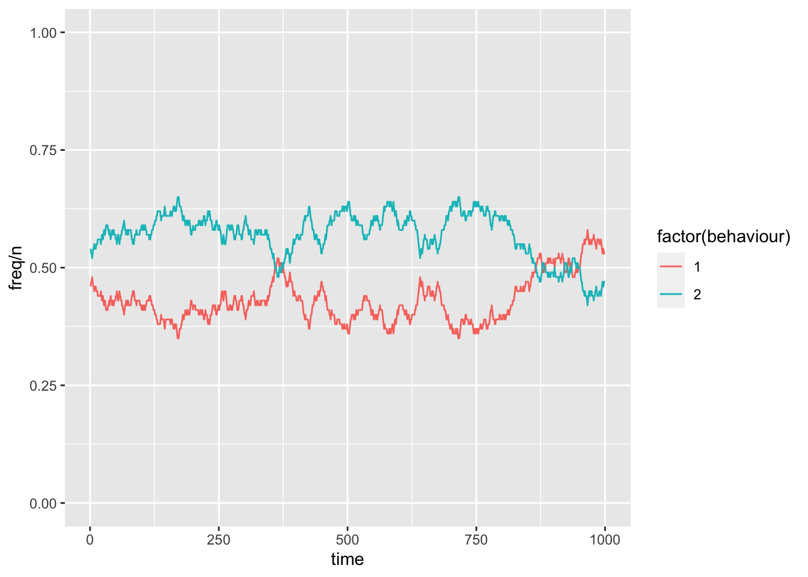
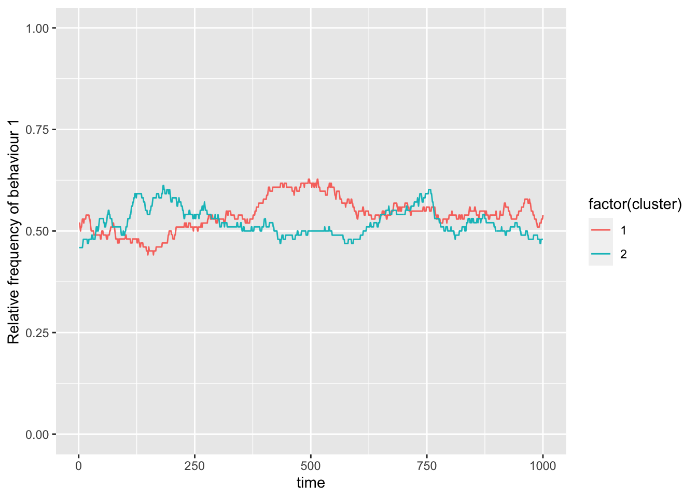
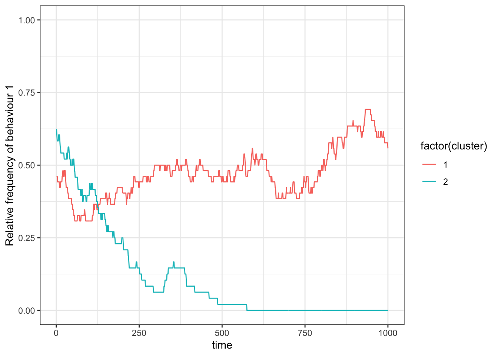
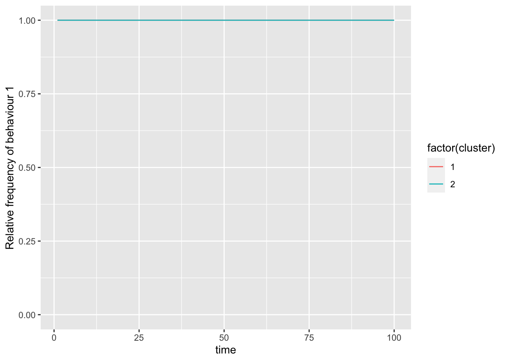
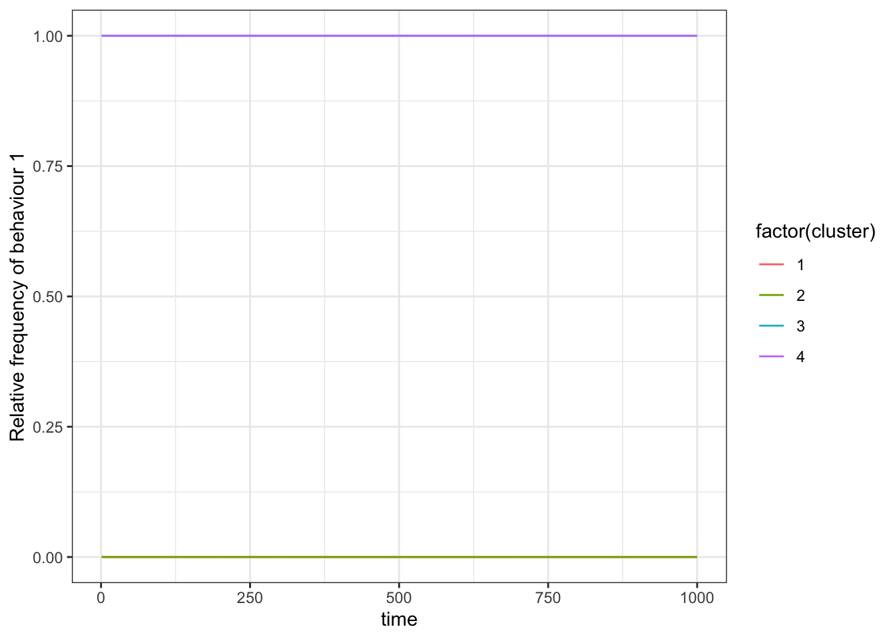
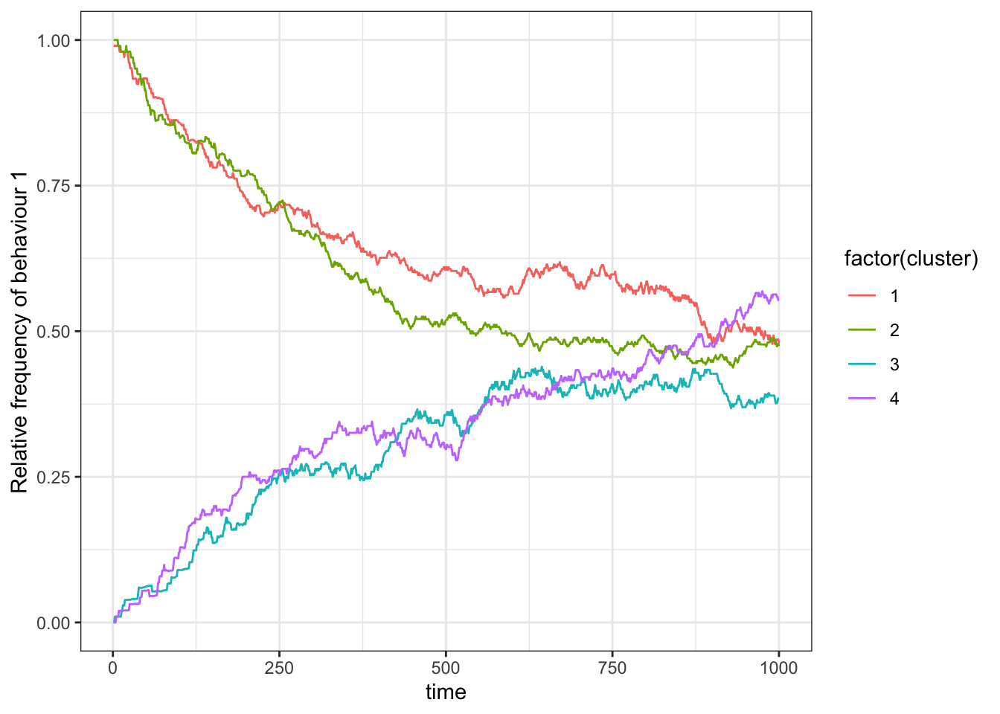
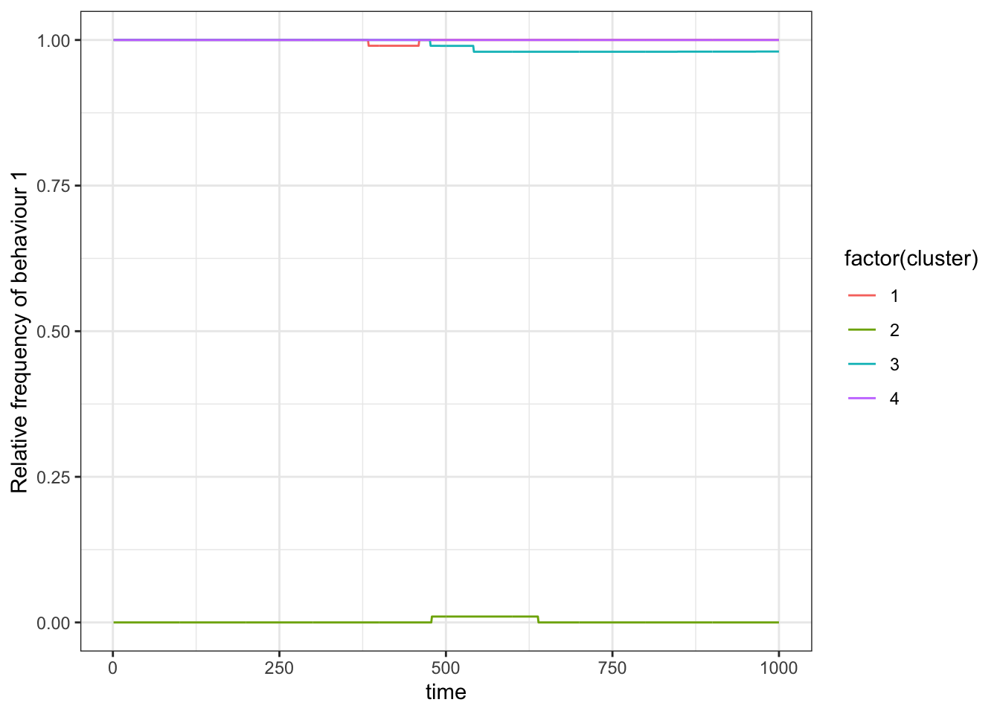
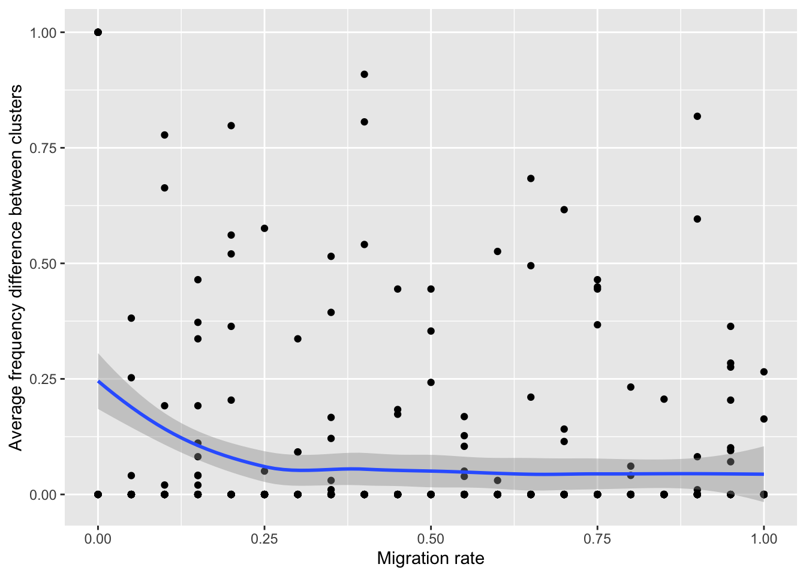

12 Group structured populations and migration
Many simulations assume well-mixed populations, that is, populations of individuals that have an equal chance of encountering each other. In the previous chapter, we have looked at the effects of structured interactions on the transmission of cultural traits. Both, structured and unstructured populations, can be good approximations to the real world, depending on the context and research question. In this chapter, we will look at structured populations, a combination of the two. That is, a large population of individuals is divided into sub-populations, where individuals within a sub-population are equally likely to encounter each other, whereas encounter frequency between sub-populations is significantly reduced. As such learning only occurs within each sub-population. However, individuals can migrate between sub-populations, bringing along their version of a cultural trait.
In this chapter, we will simulate this movement between sub-populations to study its effect on the transmission of a socially acquired behaviour. We model a population of size \(n\), with \(s\) sub-populations, and \(b\) instances of a behavioural trait. For most of this chapter, we assume that there are two versions of the behaviour, for example, two individuals greet each other either with a handshake or with a hug. You will see that there are many opportunities to alter the model (have more sub-populations, behaviours, learning events, etc.).
We will start very simply with one large population where individuals acquire a behavioural trait from a random individual in their population, and then add layers to the model. Let us set up a population:
## [1] 2 1 2 2 1 1 2 2 2 2## behaviours
## 1 2
## 46 54Because we are only interested which instance of a particular behaviour an individual expresses, each individual can be fully described by its behaviour, and so, we can represent the entire population as a vector of expressed behaviours (behaviours).
Everyone in our population is constantly exhibiting their behaviour. Occasionally, one of the individuals will copy the behaviour of another individual. To simulate this behavioural updating, we select two random individuals (an observer and a model) and then copy the model’s behaviour into the observer’s entry. We wrap a loop around these two steps to simulate repeated updating events and add a record variable to store the frequency of each of the behaviours.
t <- 1000
recbehav <- matrix(NA, nrow=t, ncol=b)
for(timestep in 1:t){
# choose a random observer and a random individual to observe
observer_model <- sample(x=n, size=2, replace=F)
# let observer acquire trait from model
behaviours[ observer_model[1] ] <- behaviours[ observer_model[2] ]
# record the frequency of each trait in each timestep
recbehav[timestep,] <- table(behaviours)
}Now, we can plot the frequency of each behaviour over time, which we recorded in the recbehav matrix.
##
## Attaching package: 'reshape2'## The following object is masked from 'package:tidyr':
##
## smithsrecbehav_d <- melt(recbehav)
colnames(recbehav_d) <- c("time", "behaviour","freq")
ggplot(recbehav_d) +
geom_line(aes(x=time, y=freq/n, col=factor(behaviour))) +
scale_y_continuous(limits=c(0,1)) +
theme_bw()
As we would have expected from an unbiased transmission, the frequency of the two traits will move around \(0.5\). For smaller populations, more traits, or longer time drift will lead to the exclusion of one of the traits. We can test this by using a much smaller population. To do so, let us first wrap the simulation in a function called migrationModel().
migrationModel <- function(POPSIZE, NBEHAVIOUR, NTIMESTEPS){
behaviours <- sample(x=NBEHAVIOUR, size=POPSIZE, replace=TRUE)
recbehav <- matrix(NA, nrow=NTIMESTEPS, ncol=NBEHAVIOUR)
for(timestep in 1:NTIMESTEPS){
# choose a random observer and a random individual to observe
observer_model <- sample(x=POPSIZE, size=2, replace=F)
# let observer acquire trait from model
behaviours[ observer_model[1] ] <- behaviours[ observer_model[2] ]
recbehav[timestep,] <- as.numeric(table(behaviours)) / POPSIZE
}
return(recbehav)
}The function makes it easy to quickly run simulations with different input parameters. Here, we run the simulation with a population size of \(n=20\):
# run simulation
set.seed(3)
res <- migrationModel(POPSIZE=20, NBEHAVIOUR=2, NTIMESTEPS=1000)
# turn results matrix into long format
recbehav_d <- melt(res)
# add descriptive column names
colnames(recbehav_d) <- c("time", "behaviour","freq")
# plot results
ggplot(recbehav_d) +
geom_line(aes(x=time, y=freq, col=factor(behaviour))) +
scale_y_continuous(limits=c(0,1)) +
theme_bw()
As you can see, the two behaviours meander until, by chance, behaviour \(1\) is completely replaced by behaviour \(2\).
12.1 Subdivided population
Now let us assume that the population we are looking at divided into two sub-populations, here clusters. We will keep track which individual belongs to which cluster and then record the frequency of one of the behaviours, \(p\), (the frequency of the other behaviour, \(q\), is simply \(1-p\)) in each cluster. Also, note that cluster size \(n\) is the same for all clusters.
migrationModel <- function(NPOP, POPSIZE, NBEHAVIOUR, NTIMESTEPS){
totalpop <- NPOP*POPSIZE
cluster <- sample(x=NPOP, size=totalpop, replace=TRUE)
behaviours <- sample(x=NBEHAVIOUR, size=totalpop, replace=TRUE)
recbehav <- matrix(NA, nrow=NTIMESTEPS, ncol=NPOP)
for(timestep in 1:NTIMESTEPS){
# choose a random observer and a random individual to observe
observer_model <- sample(x=totalpop, size=2, replace=F)
# let observer acquire trait from model
behaviours[ observer_model[1] ] <- behaviours[ observer_model[2] ]
# record the relative frequency of behaviour 1 for each cluster
recbehav[timestep,] <- unlist(lapply(1:NPOP, function(x)
sum(behaviours[cluster==x]==1) / sum(cluster==x)
))
}
recbehav_d <- melt(recbehav)
colnames(recbehav_d) <- c("time", "cluster","freq")
return(recbehav_d)
}
# run simulation
set.seed(4)
res <- migrationModel(NPOP=2, POPSIZE=100, NBEHAVIOUR=2, NTIMESTEPS=1000)
# plot results
ggplot(res) +
geom_line(aes(x=time, y=freq, col=factor(cluster))) +
scale_y_continuous(limits=c(0,1)) +
ylab("Relative frequency of behaviour 1") +
theme_bw()
Running this code repeatedly will show you two things. First, on average the frequency of each behaviour will still be around 0.5, and second that the frequency changes are highly correlated between the two sub-populations. This is expected because, with the current version of our model, individuals do not distinguish between or have different access to individuals of either cluster.
What would happen if members of a cluster preferentially learn from others within their cluster? This might be the case where individuals spent most of their time in their sub-populations. To make sure that we choose an observer and a model from the same cluster we can use the prob argument in the sample(). This argument gives a weight (or probability) with which an element of a provided set is chosen. By default, each element has a weight of \(1\) and thus is equally likely to be selected. To limit our scope to individuals within the same cluster, we can simply set the weight to \(0\) for all individuals that are in a different cluster. And so, we first select a cluster and then choose two individuals from that cluster to be our observer and model. We will add an if statement to make sure that there are at least two individuals in the cluster:
migrationModel <- function(NPOP, POPSIZE, NBEHAVIOUR, NTIMESTEPS){
totalpop <- NPOP*POPSIZE
cluster <- sample(x=NPOP, size=totalpop, replace=TRUE)
behaviours <- sample(x=NBEHAVIOUR, size=totalpop, replace=TRUE)
recbehav <- matrix(NA, nrow=NTIMESTEPS, ncol=NPOP)
for(timestep in 1:NTIMESTEPS){
# choose a random cluster
clusterid <- sample(NPOP, 1)
# if there are at least two individuals in this cluster
if(sum(cluster==clusterid)>1){
# choose a random observer and a random individual to observe within the same cluster
observer_model <- sample(x=totalpop, size=2, replace=F,
prob=(cluster==clusterid)*1)
behaviours[ observer_model[1] ] <- behaviours[ observer_model[2] ]
}
recbehav[timestep,] <- unlist(lapply(1:NPOP, function(x)
sum( behaviours[cluster==x]==1 ) / sum(cluster==x)))
}
recbehav_d <- melt(recbehav)
colnames(recbehav_d) <- c("time", "cluster","freq")
return(recbehav_d)
}
set.seed(20)
res <- migrationModel(NPOP=2, POPSIZE=50, NBEHAVIOUR=2, NTIMESTEPS=1000)
ggplot(res) +
geom_line(aes(x=time, y=freq, col=factor(cluster))) +
scale_y_continuous(limits=c(0,1)) +
ylab("Relative frequency of behaviour 1") +
theme_bw()
When you run this simulation repeatedly, you will see that sometimes one of the behaviours gets lost in one, both, or neither of the clusters. Because in this iteration of our simulation there are no interactions between individuals of different clusters, we are essentially simulating two independent populations. You can see that this is the case when we start the simulation monomorphic clusters, i.e. all individuals in a cluster start with the same behaviour:
migrationModel <- function(NPOP, POPSIZE, NBEHAVIOUR, NTIMESTEPS){
totalpop <- NPOP*POPSIZE
behaviours <- rep(sample(NBEHAVIOUR,size=NPOP,replace=T), each=POPSIZE)
cluster <- rep(1:NPOP, each=POPSIZE)
recbehav <- matrix(NA, nrow=NTIMESTEPS, ncol=NPOP)
for(timestep in 1:NTIMESTEPS){
clusterid <- sample(NPOP, 1)
if(sum(cluster==clusterid)>1){
observer_model <- sample(x=totalpop, size=2, replace=F,
prob=(cluster==clusterid)*1)
behaviours[ observer_model[1] ] <- behaviours[ observer_model[2] ]
}
recbehav[timestep,] <- unlist(lapply(1:NPOP, function(x)
sum( behaviours[cluster==x]==1 ) / sum(cluster==x)))
}
recbehav_d <- melt(recbehav)
colnames(recbehav_d) <- c("time", "cluster","freq")
return(recbehav_d)
}
res <- migrationModel(NPOP=2, POPSIZE=50, NBEHAVIOUR=2, NTIMESTEPS=100)
ggplot(res) +
geom_line(aes(x=time, y=freq, col=factor(cluster))) +
scale_y_continuous(limits=c(0,1)) +
ylab("Relative frequency of behaviour 1") +
theme_bw()
As you can see, there is no interaction between the two clusters and the frequency of behaviour 1 remains unchanged.
12.2 Simulating migration between sub-populations
In the next step, we can add migration to our model. In the context of our model, migration means that an individual is moving from one sub-population to another. However, we could also think of a version where this move is not permanent. Instead, the individual could join another group, learn a new behaviour and return to its original sub-population. Here, we will focus on the former.
To model (physical) migration, we will add the migration probability \(\mu\) to the model (where \(0\) means no migration, and \(1\) means that an individual will always choose to move to another group):
migrationModel <- function(NPOP, POPSIZE, NBEHAVIOUR, NTIMESTEPS, MIGRATION){
totalpop <- NPOP*POPSIZE
behaviours <- rep(sample(NBEHAVIOUR,size=NPOP,replace=T), each=POPSIZE)
cluster <- rep(1:NPOP, each=POPSIZE)
recbehav <- matrix(NA, nrow=NTIMESTEPS, ncol=NPOP)
for(timestep in 1:NTIMESTEPS){
clusterid <- sample(NPOP, 1)
if(sum(cluster==clusterid)>1){
observer_model <- sample(x=totalpop, size=2, replace=F,
prob=(cluster==clusterid)*1)
behaviours[ observer_model[1] ] <- behaviours[ observer_model[2] ]
}
# migration to another cluster
if((runif(1,0,1) <= MIGRATION) & (NPOP > 1)){
cluster[ observer_model[1] ] <- sample((1:NPOP)[-clusterid], 1)
}
recbehav[timestep,] <- unlist(lapply(1:NPOP, function(x)
sum( behaviours[cluster==x]==1 ) / sum(cluster==x)))
}
recbehav_d <- melt(recbehav)
colnames(recbehav_d) <- c("time", "cluster","freq")
return(recbehav_d)
}The migration code chunk is doing three things. First, we make sure that migration only happens with the pre-set probability \(\mu\) (if(runif(1,0,1) <= MIGRATION)). Second, if the statement is TRUE we choose a new cluster ID that is different from the current one (sample((1:NPOP)[-clusterid], 1)). And finally, we make sure that migration only happens if there are at least two clusters (NPOP > 1).
Setting \(\mu=0\) will recover the previous results, where the clusters behave independently:
res <- migrationModel(NPOP=4, POPSIZE=100, NBEHAVIOUR=2, NTIMESTEPS=1000, MIGRATION=0)
ggplot(res) +
geom_line(aes(x=time, y=freq, col=factor(cluster))) +
scale_y_continuous(limits=c(0,1)) +
ylab("Relative frequency of behaviour 1") +
theme_bw()
Setting \(\mu=1\), we find that the frequency of the behaviours become correlated as more and more individuals keep moving between the clusters. It is as if there were no clusters.
set.seed(2)
res <- migrationModel(NPOP=4, POPSIZE=100, NBEHAVIOUR=2, NTIMESTEPS=1000, MIGRATION=1)
ggplot(res) +
geom_line(aes(x=time, y=freq, col=factor(cluster))) +
scale_y_continuous(limits=c(0,1)) +
ylab("Relative frequency of behaviour 1") +
theme_bw()
For rare migration, we can find occasional changes in the frequency but it usually bounces back again.
set.seed(1)
res <- migrationModel(NPOP=4, POPSIZE=100, NBEHAVIOUR=2, NTIMESTEPS=1000, MIGRATION=0.01)
ggplot(res) +
geom_line(aes(x=time, y=freq, col=factor(cluster))) +
scale_y_continuous(limits=c(0,1)) +
ylab("Relative frequency of behaviour 1") +
theme_bw()
12.3 Varying the strength of migration for repeated simulation runs
As we have seen repeatedly in this book, it is often easier to understand how certain parameters affect simulation results when we run simulations many times. Therefore, let us now run our simulation repeatedly (100 times) for two clusters and a fixed migration probability (\(\mu=0.05\)). We can then use these results to see how correlated the frequency of behaviour 1 is between the two populations.
set.seed(1)
repeatedRun <- do.call("rbind",
lapply(1:100, function(run){
# run individual simulation
res <- migrationModel(NPOP=2, POPSIZE=100, NBEHAVIOUR=2, NTIMESTEPS=1000, MIGRATION=.05)
# return only the frequency for each cluster at the last time step
resLast <- res[res[,"time"]==max(res[,"time"]),"freq"]
return(resLast)
})
)
# plot results
ggplot(as.data.frame(repeatedRun)) +
geom_point(aes(x=V1, y=V2)) +
xlab("Frequency in cluster 1") +
ylab("Frequency in cluster 2") +
theme_bw()
# return mean absolute difference of behaviour frequency between the two clusters
mean(abs(repeatedRun[,1]-repeatedRun[,2]))## [1] 0.3123796The plot shows four possible outcomes of these simulations. In the extreme case, both clusters are fixed on behaviour 1 (top right) or both clusters are fixed on behaviour 2 (bottom left). And then there are two intermediate results where cluster 1 has a high frequency of behaviour 1 and migration to cluster 2 is slightly increasing its frequency in that cluster, and vice versa.
Let us modify the code so that the simulation runs repeatedly and at the end returns the analysed results.
migrationModelAnalysed <- function(NPOP, POPSIZE, NBEHAVIOUR, NTIMESTEPS, MIGRATION, REPETITIONS){
totalpop <- NPOP*POPSIZE
recbehavFreq <- matrix(NA, ncol=NPOP, nrow=REPETITIONS)
# run repeated independent simulations
for(repetitions in 1:REPETITIONS){
behaviours <- rep(sample(NBEHAVIOUR,size=NPOP,replace=T), each=POPSIZE)
cluster <- rep(sample(NPOP), each=POPSIZE)
for(timestep in 1:NTIMESTEPS){
clusterid <- sample(NPOP, 1)
if(sum(cluster==clusterid)>1){
observer_model <- sample(x=totalpop, size=2, replace=F,
prob=(cluster==clusterid)*1)
behaviours[ observer_model[1] ] <- behaviours[ observer_model[2] ]
}
if((runif(1,0,1) <= MIGRATION) & (NPOP > 1)){
cluster[ observer_model[1] ] <- sample((1:NPOP)[-clusterid], 1)
}
}
recbehavFreq[repetitions, ] <- unlist(lapply(1:NPOP, function(x)
sum( behaviours[cluster==x]==1 ) / sum(cluster==x)))
}
return(
data.frame(migration=MIGRATION,
absdiff = (abs(recbehavFreq[,1]-recbehavFreq[,2])))
)
}migrationModelAnalysed(NPOP=2, POPSIZE=50, NBEHAVIOUR=2, NTIMESTEPS=1000, MIGRATION=.05, REPETITIONS=5)## migration absdiff
## 1 0.05 0.0000000
## 2 0.05 0.5539452
## 3 0.05 0.5815972
## 4 0.05 0.3038194
## 5 0.05 0.0000000As you can see, for some simulations these differences can be quite large, whereas in some the difference is zero. This will be the case where both populations randomly started monomorphic for the same behaviour, or where they ended up in that state.
Using our migrationModelAnalysed() function we can easily run this simulation for various different migration rates and several repetitions:
set.seed(2)
repeatedRun <- do.call("rbind",
lapply(seq(from=0, to=1, by=0.05), function(migration){
migrationModelAnalysed(NPOP=2, POPSIZE=50, NBEHAVIOUR=2, NTIMESTEPS=10000, MIGRATION=migration, REPETITIONS=20)
})
)ggplot(repeatedRun) +
geom_point(aes(x=migration, y=absdiff)) +
geom_smooth(aes(x=migration, y=absdiff)) +
xlab("Migration rate") +
ylab("Average frequency difference between clusters") +
theme_bw()## `geom_smooth()` using method = 'loess' and formula 'y ~ x'
When we plot the results (as a scatter-plot with an added loess trendline), we can see again for the case where there is no migration (\(\mu=0\)) the two clusters either have entirely the same (difference \(=0\)) or entirely different behaviours (difference \(=1\)). We can also see that for all migration probabilities there is a chance that both clusters will end up being monomorphic in their behaviour. Conversely, the probability that the two clusters are entirely different in their behaviour decreases as \(\mu\) increases. It is also interesting to see that for the parameters we have chosen here this happens most dramatically for \(\mu<0.25\). For larger values of \(\mu\) the difference between the two clusters is on average \(0\). This is what we would expect: when migration is high sub-populations are essentially becoming one large population again. Given enough time drift will lead to the fixation of one of the behaviours.
12.4 Model extensions
There are many ways in which we can analyse this basic model. For example, how population size affects the above result or the number of behaviours and clusters. Also, there are a few interesting ways to extend the base model. We list a couple of them below.
Innovation or mutation
An interesting extension to this model is the addition of innovation or mutation. For example, individuals could invent completely new behaviours (in this case we would not work with a fixed behaviour number \(b\)), or with a certain probability, an individual might try to copy behaviour 2 but acquires behaviour 1. These are all mechanisms that would diversity to the model that in itself is interesting to study.
Copy \(m\) models
So far, an individual is changing its behaviour based on observing one other individual. However, instead of choosing from a single model, we can change the code such that the individual is considering the behaviours of \(m\) other individuals. As we have seen in previous chapters, as the difference between \(n\) and \(m\) becomes smaller the more the dynamics will look like frequency biased copying.
To achieve this behaviour we can change the observer_model selection part of our model and change it to:
if(sum(cluster==clusterid)>m){
observer_model <- sample(x=totalpop, size=m+1, replace=F,
prob=(cluster==clusterid)*1)
behaviours[ observer_model[1] ] <-
behaviours[ sample(observer_model[2:(m+1)], size=1) ]
}where \(m\) is the number of models to observe. (Note, due to the peculiarities of the sample() function this code only works for \(m>1\)).
Learn from but not moving to another sub-population
Another extension of those model would be to have individuals not actually (physically) move between sub-populations, but rather do expeditions to another group, copy a behaviour, and bring it back to their original group. Let’s assume this happens with probability \(\alpha\).
To do this, we would again make changes to the observer_model selection part of the code. We would now choose the cluster ID for the model and the observer independently.
if(runif(n=1,min=0,max=1) < alpha){
# learn from a different cluster
if(any(cluster==clusterid) & any(cluster!=clusterid)){
observer_model <- c(sample(x=totalpop, size=1, prob=(cluster==clusterid)*1),
sample(x=totalpop, size=1, prob=(cluster!=clusterid)*1))
}
} else {
# learn from same cluster
if(sum(cluster==clusterid)>1){
observer_model <- sample(x=totalpop, size=2, replace=F,
prob=(cluster==clusterid)*1)
}
}
behaviours[ observer_model[1] ] <- behaviours[ observer_model[2] ]Note, this would also prohibit clusters from every being empty as no individual would ever leave their cluster. Depending on the objective of the model this could be useful.
Variable migration probability among sub-populations
Finally, this model can be extended to accommodate different population structures. In this chapter, we have only looked at symmetric connections between sub-populations (all sub-populations are connected and migration between them is equally likely). But the structure could also be a line, a circle, a star, and others, where not all sub-populations are connected (missing links) or where migration probability is low (using weighted connections). This can be useful to generally better understand how population structure will affect transmission. But it can also be used to model specific scenarios if there is existing data on population structure.
For this iteration of the base model, we need to change the migration section. Instead of choosing randomly among other clusters, we would provide a probability vector to the sample() function that reflects the probabilities to move from one to another sub-population. As an example, let us assume we are looking at three sub-populations \(\{A, B, C\}\). A simple structure is a line, where \(A\) is connected with \(B\) and \(B\) is connected with \(C\), or A--B, B--C. We can use an adjacency matrix to describe the probability to move from one sub-population to another:
## [,1] [,2] [,3]
## [1,] 0 1 0
## [2,] 1 1 1
## [3,] 0 1 0If rows are the starting and columns the destiny sub-populations, then this matrix tells us that an individual in sub-population \(A\) (first row) can move to \(B\) (second column entry is a one) but not to \(C\) (last column entry is a zero). Now, when we determine that an individual is moving to a different group, we can simply recall the correct row of the adj matrix based on the individual’s clusterid:
if((runif(1,0,1) <= MIGRATION) & (NPOP > 1)){
cluster[ observer_model[1] ] <- sample((1:NPOP), size=1, prob=adj[clusterid,])
}Also, this piece of code allows us to use non-binary values, where small values represent a low probability to move from one to another sub-population, and asymmetric matrices where the probability going from \(A\) to \(B\) can be different from the probability for the reverse movement.
12.5 Summary of the model
12.6 Further reading
There are a couple of interesting empirical studies on migration and the social transmission of locally adaptive behaviours in animals. For example, the study by Luncz and Boesch (2014) reports on the stability of tool traditions in neighbouring chimpanzee communities.
There are also a few theoretical studies on the persistence or change of local traditions. Boyd and Richerson (2009), for example, focus on how adaptive a behaviour is, whereas Mesoudi (2018) focusses on the strength of acculturation that is required to maintain cultural diversity between groups.
References
Boyd, Robert, and Peter J. 2009. “Voting with Your Feet: Payoff Biased Migration and the Evolution of Group Beneficial Behavior.” Journal of Theoretical Biology 257 (2): 331–39. https://doi.org/10.1016/j.jtbi.2008.12.007.
Luncz, Lydia V., and Christophe Boesch. 2014. “Tradition over Trend: Neighboring Chimpanzee Communities Maintain Differences in Cultural Behavior Despite Frequent Immigration of Adult Females: Neighboring Chimpanzee Communities.” American Journal of Primatology 76 (7): 649–57. https://doi.org/10.1002/ajp.22259.
Mesoudi, Alex. 2018. “Migration, Acculturation, and the Maintenance of Between-Group Cultural Variation.” Edited by Valerio Capraro. PLOS ONE 13 (10): e0205573. https://doi.org/10.1371/journal.pone.0205573.